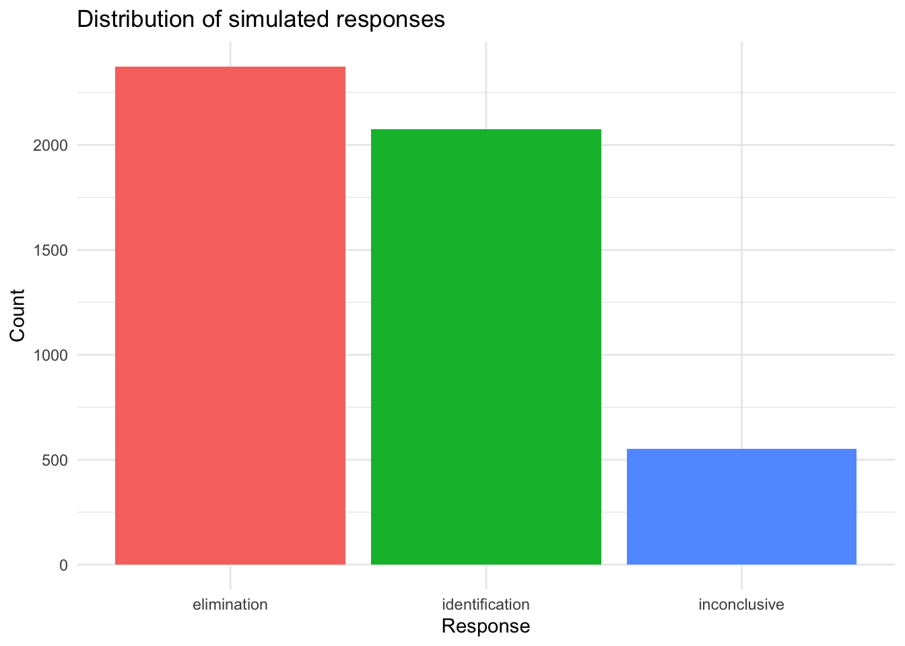
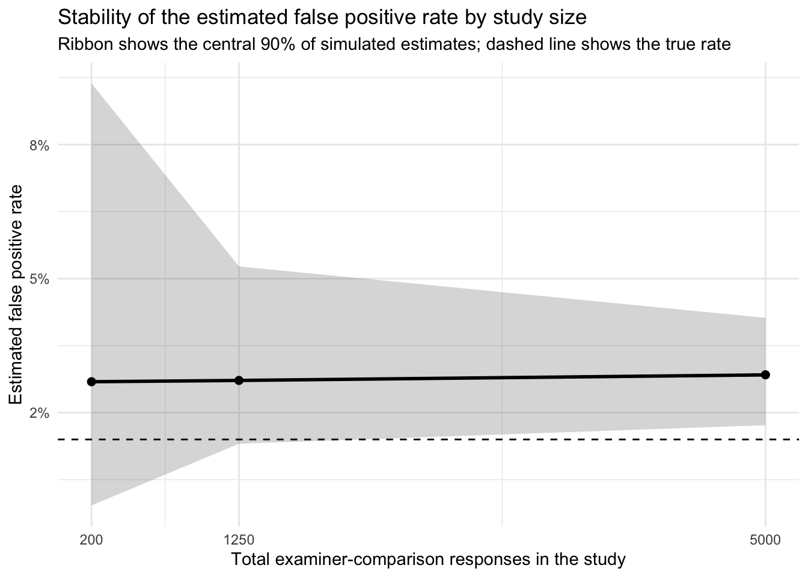
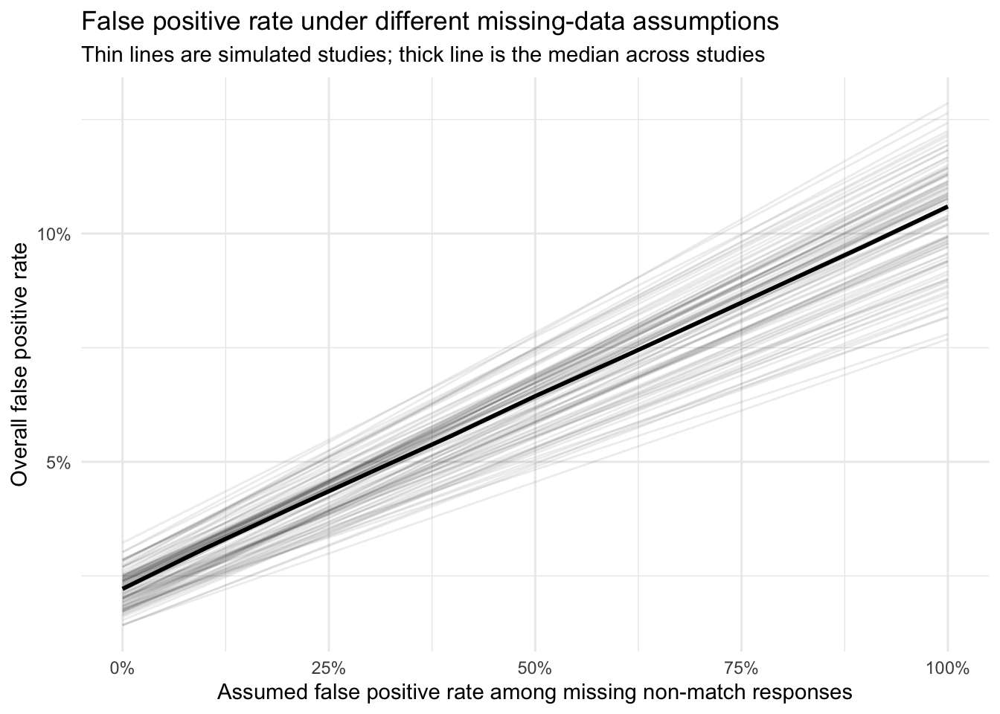

The goal of this study is to use simulation to show how methodological flaws in forensic firearm validity studies can distort the error rates those studies report. Rather than trying to estimate a single true firearm error rate, the analysis examines how different flaws discussed in Cuellar, M., Vanderplas, S., Luby, A., & Rosenblum, M. (2024) affect whether the reported false positive, false negative, and inconclusive rates are stable, interpretable, and valid measures of real-world examiner performance.
Data generation
Number of examiners and comparisons
First, install the packages used in the analysis if they are not already available on the machine.
Now generate the examiner panel. Each examiner gets a latent skill value and a separate tendency to call a comparison inconclusive.
Examiner performance
Code
examiner_panel <-tibble(examiner_id =paste0("E", 1:n_examiners),examiner_skill =rnorm(n_examiners, mean =0, sd = examiner_sd),examiner_inconclusive_tendency =rnorm(n_examiners, mean =0, sd = examiner_sd /2))
Next, combine the shared question set with the examiner panel so that every examiner sees the same questions. Then compute a challenge score for each examiner-question pair.
dim(sim_test) # there are 50 examiners, with 100 questions each, for 5000 total responses
[1] 5000 8
Simulated responses
Now define the response model for a single examiner-question pair. The baseline false positive, false negative, and inconclusive rates are treated as average rates in the population. For each examiner-question pair, those baseline probabilities are moved up or down on the log-odds scale according to the challenge of that pairing, so harder questions and weaker examiners lead to higher error probabilities while easier questions and stronger examiners lead to lower ones.
Now inspect a small, readable slice of the simulated responses to check whether the generated data look sensible. The table below shows the first several rows from the first few examiners.
Each row in this table is one examiner-question pair. The columns identify the examiner, the question, the true status of the comparison, the latent difficulty of the question, the latent skill and inconclusive tendency of the examiner, the overall challenge of that pairing, and the simulated response that the examiner gave.
These summary statistics describe the simulated dataset as a whole, including the number of rows, the number of unique examiners and questions, and the distribution of truth labels and responses.
# A tibble: 11 × 2
quantity value
<chr> <chr>
1 Rows in simulated dataset 5000
2 Examiners 50
3 Questions 100
4 Same-source comparisons 47.0%
5 Different-source comparisons 53.0%
6 Identification responses 41.5%
7 Elimination responses 47.5%
8 Inconclusive responses 11.0%
9 Mean examiner skill 0.03
10 Mean question difficulty -0.04
11 Mean decision challenge -0.07
These plots give a quick view of the simulated dataset. The first two plots show latent simulation quantities rather than directly observed measurements: examiner skill is a relative skill parameter, question difficulty is a relative difficulty parameter, and both are plotted on the latent scale used to generate the response probabilities. The third plot shows the mix of simulated response types.
response_distribution_plot <- sim_data %>%count(response) %>%ggplot(aes(x = response, y = n, fill = response)) +geom_col(show.legend =FALSE) +labs(title ="Distribution of simulated responses",x ="Response",y ="Count" ) +theme_minimal()ggsave(filename =file.path(figure_output_dir, "simulated-response-distribution.png"),plot = response_distribution_plot,width =7,height =5,dpi =300)response_distribution_plot

Reviewing the flaws from Cuellar et al. (2024)
The sections that follow return to the flaws identified in Cuellar et al. (2024) and consider how each one affects the interpretation of reported error rates. Some flaws primarily affect how the data are summarized and can therefore be addressed, at least in part, through reanalysis. Other flaws arise at the level of study design and data collection. Those flaws are more serious because they determine what information is present in the dataset in the first place.
The first flaw considered here is inadequate sample size. Even when the study design is otherwise well structured, too few examiners or too few comparisons can produce error-rate estimates that are unstable, overly reassuring, and far more sensitive to chance than they appear.
A. Inadequate sample size (MARIA)
Why sample size matters
Small sample size matters because it does not merely make error-rate estimates less precise. It can also make them look more reassuring than the design justifies. With too few examiners or too few comparisons, a study can easily observe very few errors, or even no errors at all, simply by chance.
To illustrate that problem, the next analysis repeats the entire study many times at three different sizes. For each simulated study, it calculates pooled false positive and false negative rates, approximate confidence interval widths, and whether the study observed zero false positives. The point is not to recover one correct estimate, but to show how unstable the reported estimates are when the study is too small.
Simulation design
First, define a function that simulates one complete study at a given number of examiners and comparisons, using the same data-generating process introduced above.
Now define a lightweight helper that computes an approximate 95% confidence interval width for a proportion. This is faster than calling prop.test() in every replication and is sufficient for illustrating how uncertainty changes with sample size.
Now define a function that summarizes one simulated study. Here the false positive and false negative rates are calculated with the appropriate denominators: non-matches for the false positive rate and matches for the false negative rate.
Now specify three study sizes. The small study has few examiners and few comparisons, the medium study is larger but still limited, and the large study is closer to the baseline design used above.
Now simulate many studies under each scenario. Repeating the study many times shows the range of error-rate estimates that one could easily obtain from the same underlying process.
The next plot shows the distribution of false positive rate estimates across the repeated studies. Small studies produce much more variable estimates, including many studies that report no false positives at all.
This final plot shows how the average width of the confidence intervals shrinks as the study gets larger. Small studies do not simply have noisier estimates; they also carry much greater uncertainty.
This next plot shows the stability of the estimated false positive rate across study sizes. The horizontal dashed line marks the true false positive rate used in the simulation, while the solid line and ribbon show the median and central 90% of the simulated estimates. Small studies produce a much wider range of apparent false positive rates, including estimates near zero.
Code
sample_size_stability <- sample_size_results %>%group_by(scenario, n_examiners, n_comparisons) %>%summarise(median_fpr =median(fpr),lower_fpr =quantile(fpr, 0.05),upper_fpr =quantile(fpr, 0.95),.groups ="drop" ) %>%mutate(total_responses = n_examiners * n_comparisons )fpr_stability_plot <-ggplot(sample_size_stability, aes(x = total_responses, y = median_fpr)) +geom_ribbon(aes(ymin = lower_fpr, ymax = upper_fpr), alpha =0.2) +geom_line(linewidth =1) +geom_point(size =2) +geom_hline(yintercept = false_positive_rate,linetype ="dashed" ) +scale_x_continuous(breaks = sample_size_stability$total_responses ) +scale_y_continuous(labels = scales::percent_format(accuracy =1)) +labs(title ="Stability of the estimated false positive rate by study size",subtitle ="Ribbon shows the central 90% of simulated estimates; dashed line shows the true rate",x ="Total examiner-comparison responses in the study",y ="Estimated false positive rate" ) +theme_minimal()ggsave(filename =file.path(figure_output_dir, "fpr-stability-by-sample-size.png"),plot = fpr_stability_plot,width =7,height =5,dpi =300)fpr_stability_plot

Interpretation
Taken together, these simulations show that inadequate sample size can produce error-rate estimates that appear reassuring simply because the study is too small to reveal the underlying variability. A small study may report very low observed error rates, or even zero observed false positives, without providing strong evidence that the true error rate is comparably low.
B. Non-representative sample (AMANDA)
C. Non-representative testing conditions and environment/Contextual bias (MARIA)
Why testing conditions matter
Testing conditions matter because examiner behavior can change when examiners know they are being tested. Scurich et al. (2025) report that the inconclusive rate for discovered test items at the Houston Forensic Science Center was 56.4%, compared with 39.3% for undiscovered blind test items. That is, the inconclusive rate was 43.5% higher when examiners recognized that the item was part of a test. The same pattern appeared for bullet comparisons (83% vs. 59%) and cartridge case comparisons (29% vs. 20%). Those findings are consistent with the concern that non-blind studies do not reproduce ordinary casework conditions and may therefore distort the resulting performance estimates.
Simulation design for contextual bias
To illustrate that problem, the next simulation compares two settings: a blind condition, in which examiners behave as they do in routine casework, and a known-test condition, in which the probability of an inconclusive decision is increased using the shift reported by Scurich et al. (2025). The idea is simple: when examiners know they are being tested, they may protect themselves by moving difficult decisions into the inconclusive category. If that happens, the measured error rates among conclusive decisions can look better even though the underlying difficulty of the task has not changed.
First, translate the Scurich et al. (2025) finding into a shift on the log-odds scale. This shift is based on the difference between the reported inconclusive rates for discovered and undiscovered items.
Now define a function that simulates one study under either blind or known-test conditions. The only difference between the two conditions is the added shift in the probability of an inconclusive response.
The first plot shows how the inconclusive rate shifts upward when examiners know they are being tested. This is the pattern reported by Scurich et al. (2025) and built into the simulation.
The next plot shows how the measured false positive and false negative rates change across the two conditions. As more difficult cases are diverted into the inconclusive category, the observed error rates can appear more favorable.
This simulation shows how non-representative testing conditions can bias the performance quantities reported by a validation study. Using the shift observed by Scurich et al. (2025), the known-test condition produces a substantially higher inconclusive rate than the blind condition. That shift matters because it changes which examiner-item pairs remain in the pool of conclusive decisions. When examiners can move more difficult decisions into the inconclusive category, the resulting false positive and false negative rates can look better than they would under genuinely blind, casework-like conditions. In that sense, non-blind testing environments do not merely alter examiner behavior in a superficial way; they can change the very quantities that the study is trying to estimate.
D. Inconclusive responses are treated as correct or ignored (AMANDA)
E. Invalid or nonexistent uncertainty measures for error rates (AMANDA)
Note: Look at Hicklin 2024 bootstrap sample (still invalid because non-representative sample, but we can use it to compare).
F. Missing data (MARIA)
Why missing data matters
Missing data can bias reported error rates when the missing responses are not a random subset of the study. If difficult items, weak examiner-item pairings, or outright errors are more likely to be missing, then calculating error rates only from the observed responses will systematically understate the rate of error. In that setting, the problem is not just that the study has less information than intended. The observed data are selectively filtered in a way that changes the apparent performance of the examiners.
Simulation design for missingness
To illustrate that point, the next simulation starts with the complete simulated dataset and then imposes missingness. Missing responses are made more likely when the examiner-question pairing is difficult, when the response is incorrect, and when the response is inconclusive. This creates a simple missing-not-at-random mechanism in which the responses most likely to make performance look worse are also the most likely to disappear from the observed dataset.
First, define a function that imposes missingness on a complete study.
Now repeat that comparison across many simulated studies so that the bias from missing data can be seen across replications rather than in a single example.
The next plot compares the true and observed error rates across the repeated studies. If missing responses are ignored, the observed rates tend to look better than the truth.
This final plot shows a simple sensitivity analysis for the false positive rate. Starting from the observed false positive rate among the non-missing responses, it asks what the overall false positive rate would be if different fractions of the missing non-match responses were actually false positives. When the observed false positive rate is low, the estimated rate can still become much larger once plausible missing-data scenarios are taken into account.
Code
fpr_sensitivity <- missing_data_results %>%transmute( replicate_id, observed_fpr,missing_nonmatch_rate =pmax(missing_rate, 0) ) %>%crossing(assumed_missing_fp_rate =seq(0, 1, by =0.1)) %>%mutate(adjusted_fpr = observed_fpr * (1- missing_nonmatch_rate) + assumed_missing_fp_rate * missing_nonmatch_rate )missing_fpr_sensitivity_plot <-ggplot( fpr_sensitivity,aes(x = assumed_missing_fp_rate,y = adjusted_fpr,group = replicate_id )) +geom_line(alpha =0.08) +stat_summary(aes(group =1),fun = median,geom ="line",linewidth =1 ) +labs(title ="False positive rate under different missing-data assumptions",subtitle ="Thin lines are simulated studies; thick line is the median across studies",x ="Assumed false positive rate among missing non-match responses",y ="Overall false positive rate" ) +scale_x_continuous(labels = scales::percent_format(accuracy =1)) +scale_y_continuous(labels = scales::percent_format(accuracy =1)) +theme_minimal()ggsave(filename =file.path(figure_output_dir, "missing-fpr-sensitivity.png"),plot = missing_fpr_sensitivity_plot,width =8,height =5,dpi =300)missing_fpr_sensitivity_plot

Interpretation of missing data
These simulations show that missing data can bias reported error rates when the missing responses are systematically related to difficult items or poor performance. In that setting, simply dropping the missing responses does not recover the true error rates from the remaining observed data. Instead, it creates a more favorable picture of examiner performance by disproportionately removing the responses most likely to count as errors or inconclusives.
Discussion
The simulations developed so far show that several of the flaws identified in Cuellar et al. (2024) change the meaning of the reported error rates, not just their precision. In the baseline simulation, performance varies across both examiners and items, which makes clear that any reported error rate is an average over a heterogeneous process. Once that heterogeneity is acknowledged, it becomes easier to see why poor study design can distort the results in systematic ways.
Taken together, these results support a distinction between flaws that are mainly analytic and flaws that are built into study design and data collection. Some problems, such as omitted uncertainty intervals or alternative ways of tabulating existing responses, may be at least partly fixable after the fact if the raw data are available. By contrast, inadequate sample size, non-representative testing conditions, and missing data affect what is observed in the first place. Those flaws do not merely complicate interpretation; they can make the resulting estimates poor measures of the performance quantity that researchers, courts, and policymakers care about.
Supplementary notes
An example of a correctly done study
Evaluation of performance
Item-level outcomes
Now convert the raw responses into performance indicators at the comparison level, including whether the response was correct, false positive, false negative, true positive, true negative, or inconclusive.
NOTE: We should probably provide a likelihood ratio here instead of the FPR, FNR, etc. ALso, note how the FPR and FNR are being calculated regarding the inconclusives.
Now show performance across all examiners.
Performance across examiners
Finally, average the examiner-level summaries to produce an overall description of the simulated study.